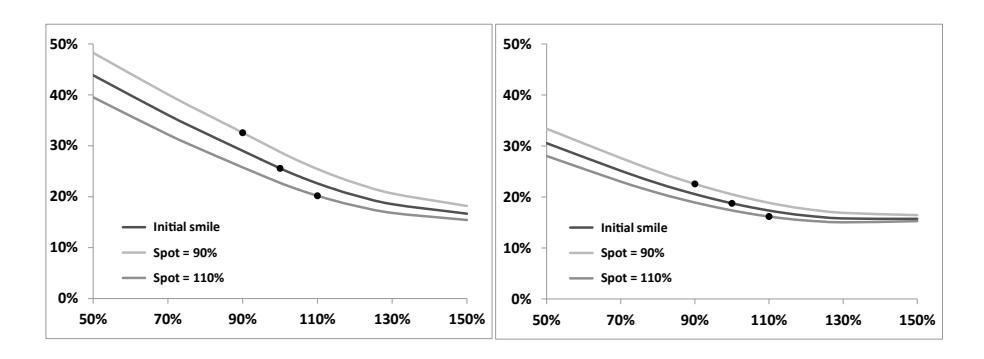
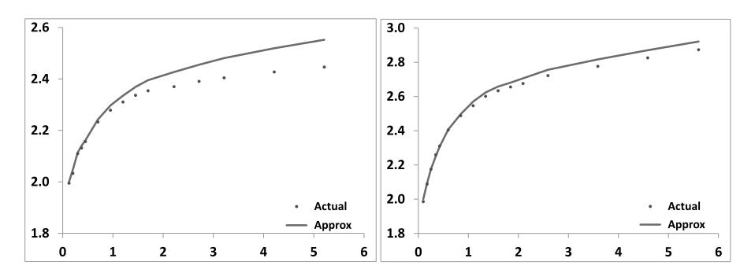
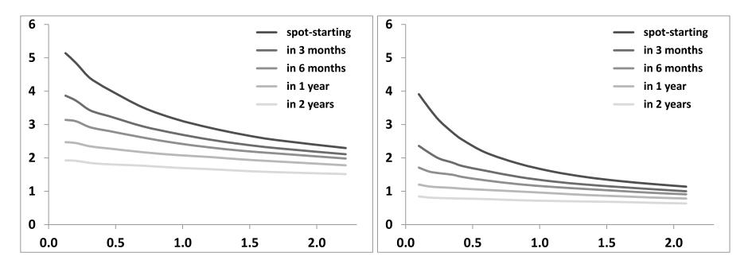

第二章：局部波动率模型
——最简单的市场模型
本笔记基于 Bergomi《Stochastic Volatility Modeling》第二章，按原书行文结构整理，兼顾数学推导的经济直觉与实务启发。
目录
- 导言：局部波动率作为市场模型（§2.1）
- 从期权价格到局部波动率（§2.2）
- 从隐含波动率到局部波动率（§2.3）
- 从局部波动率到隐含波动率（§2.4）
- 局部波动率模型的动态（§2.5）
- 未来偏斜与波动率的波动率（§2.6）
- Delta 与 Carry P&L（§2.7）
- 依赖支付函数的盈亏平衡水平（§2.8）
- Vega 对冲组合的构造（§2.9）
- 马尔可夫泛函模型与高斯 Copula（§2.10）
- 端到端工作流算例
导言：局部波动率作为市场模型（§2.1）
1.1 市场模型的基本要求
第一章已经确立了"市场模型"的标准：模型必须将香草期权价格视为与标的资产同等地位的对冲工具，且 Theta 与所有交叉 Gamma 之间存在正定的盈亏平衡协方差矩阵。
局部波动率（local volatility）模型由 Derman-Kani 和 Dupire 在1994年独立提出。它的持久流行源于一个关键特性：可以精确校准到任意无套利的波动率曲面。因为任何欧式期权都可以用相同到期日的香草期权合成（见第3章），局部波动率模型能精确定价所有欧式期权。
从市场模型的视角看，局部波动率模型是最简单的一类：校准到市场微笑后，模型被完全确定，隐含波动率曲面的动态随之固定——没有任何自由参数可以独立控制波动率的波动率或现货与隐含波动率的相关结构。这种"节约"是有代价的。
1.2 模型的标准随机微分方程
局部波动率模型中，标的资产 的动态方程为：
与 Black-Scholes 模型的唯一差别在于，波动率由常数 换成了关于时间 和当前价格 的确定性函数 。定价方程与 Black-Scholes 方程形式相同，仅以 取代常数 ：
传统表述的误区：教科书通常将 视为核心对象——在 时校准后冻结不变，永久使用。然而 Bergomi 指出，这违背了交易实践中每日重新校准的惯例。正确的理解将在 §2.7 给出：重新校准是局部波动率模型的标准使用方式，由此产生的 carry P&L 具有标准的盈亏平衡形式。
2. 从期权价格到局部波动率（§2.2）
为什么要从期权价格推导局部波动率？
这是整章逻辑的起点。局部波动率模型的核心承诺是"精确校准到整张波动率曲面"，但要兑现这一承诺，必须回答一个构造性问题：给定市场上可观测的期权价格（隐含波动率曲面），如何唯一确定局部波动率函数 ？
如果没有 Dupire 公式，局部波动率模型就只是一个抽象声明——"存在某个 使模型与市场一致"，但无法算出它是什么，更谈不上用于定价和对冲。
从更深的角度看，§2.2 的推导还回答了一个更基本的问题：市场期权价格究竟告诉了我们关于未来波动率过程的什么信息？ 答案是：仅凭香草期权价格，我们只能确定条件期望 ，而无法完整刻画 的路径分布。局部波动率是对这一信息最节约的利用——用一个确定性函数 恰好匹配所有这些条件期望，既不多假设，也不少假设。
2.1 Dupire 公式的推导
给定标的资产的一般扩散动态：
其中 为任意随机过程。问题是：仅凭香草期权价格，我们能对 了解多少？
对看涨期权价格 在 上做 Itô 展开：
其中 为 Heaviside 函数， 为 Dirac delta 函数。
对无折现期权价格 关于 求导，得到两个重要关系：
第二式说明，无折现看涨价格对行权价的二阶导数给出 的风险中性（定价）密度，这是一个基本结果。
对式（2.4）两边取期望，利用 （可由 直接推出），整理后得到：
两边同除以 ，再换回折现价格 ，得到 Dupire 方程：
这个恒等式的含义是：在扩散模型框架下，条件瞬时方差与期权价格的期限和行权价导数之间存在一个普遍关系。
Dupire 方程的经济直觉：分子 反映了期权价格随到期日的增长（扣除融资效应）——这是额外时间提供的不确定性；分母 是蝶式价差价格，正比于 处的风险中性密度。直觉上，局部波动率是"市场共识中，在时刻 、价格水平 处的条件期望瞬时波动率"。
仅凭香草期权价格，无法唯一确定随机过程 ，但可以刻画所有与给定微笑一致的扩散过程的等价类——两个过程 产生相同微笑，当且仅当对所有 ，。
Gyöngy 定理：任意扩散过程的边际分布可由一个有效局部波动率模型精确复制，其局部波动率为 。这是一个强有力的结果：无论真实世界的波动率过程多么复杂，总存在一个局部波动率模型能精确匹配所有欧式期权价格。这也意味着，局部波动率模型与任意随机波动率模型之间存在一个等价类关系——两者可以产生完全相同的期权价格（截面），但动态截然不同。
满足此约束的最简单方案是令 为 的确定性函数，此时条件期望退化为：
即得到 Dupire 局部波动率公式：
反过来，给定局部波动率函数 ，期权价格也满足前向方程（forward equation）：
前向方程与通常的定价（后向）方程的区别：后向方程固定行权价和到期日，对一系列初始现货值求价格；前向方程固定初始现货值 ，对所有 和 同时求价格，在不需要对 求导数的场合更为高效。
2.2 无套利条件（§2.2.2）
Dupire 公式的分子和分母必须均为正，否则局部波动率无意义（负的方差）。Bergomi 证明：违反正性等价于市场价格存在套利。
行权价套利（分母）
对应蝶式价差（butterfly spread）的价格——由买入 和 处的看涨期权，卖出两份 处的看涨期权构成。蝶式价差在到期日的支付是以 为中心的三角形，面积为1，处处非负，因此价格必须为正（否则可以无风险获利）。
在模型中， 由定义保证。违反分母正性称为行权价套利。
蝶式价差的经济含义：，对应买入 处看涨期权并卖出两份 处看涨期权的组合。该组合到期支付为以 为中心的三角形，面积为1，处处非负。价格为负意味着市场愿意付钱给你接受一个处处非负的支付——这是明显的无风险套利。市场期权市场通常足够有效，蝶式价差不会出现负价格（考虑到买卖价差后更是如此）。
到期日套利（分子）
分子可以改写为：
其为正等价于：固定 moneyness 时，期权价格（调整后）是到期日的增函数：
若此条件被违反，可以构造包含买入远月期权、卖出近月期权并在 进行 Delta 对冲的策略。具体地，在 时刻若 则持有 份标的（delta 对冲），否则 。 时刻的总损益为：
由于 是凸函数，凸函数总在其切线之上，上式处处非负。这一策略初始收取净权利金（条件（2.9）被违反），且在 处损益非负——无风险套利。违反分子正性称为到期日套利。
到期日无套利的经济直觉：更长期限的期权应更贵（经 调整后），因为更长的时间提供了更多不确定性，而期权价值来源于不确定性。
到期日无套利条件的等价隐含波动率形式推导：引入 （对数正态鞅），令 ，则：
满足前向 PDE 。由于 正比于对数正态密度（严格为正），故 ， 关于 严格递增。由此 ，翻译为隐含波动率即得：
对隐含波动率的等价条件
条件（2.9）用隐含波动率语言等价表述为：
即给定任意 moneyness，积分方差（integrated variance）必须是到期日的增函数。这个条件在 坐标下表述简洁：，即各期限的 曲线不得交叉。
实务注意：真实市场的套利论证有时过于理想化，忽略了逐市值损益和买卖价差。对于一个持有负价值蝶式价差的头寸，即使理论上无风险，在持仓期间的逐日盯市亏损可能迫使其提前平仓。
3. 从隐含波动率到局部波动率（§2.3）
§2.2 的 Dupire 公式（2.3）已经在理论上解决了从期权价格到局部波动率的问题。但在实践中，交易台拿到的是隐含波动率曲面而非直接的期权价格，且数据只在离散的行权价和到期日上可得。本节解决两个工程问题：
- 直接从隐含波动率计算局部波动率（式2.19），避免先还原价格再求导的中间步骤；
- 构建满足无套利条件的连续插值曲面，使得在任意 处都能安全使用公式（2.19）。
这一节的产出是"校准工具"，是局部波动率模型进入实际使用的工程基础。
3.1 Dupire 公式的隐含波动率参数化形式
实际应用中，期权价格通常以隐含波动率给出，而非直接价格。用 Black-Scholes 公式将 表示为隐含波动率的函数后，代入 Dupire 公式（2.3），经过解析微分并引入参数化：
可以得到局部波动率关于隐含波动率的显式表达式：
无套利条件的简洁形式：在 坐标下，到期日无套利等价于 （不同到期日的 曲线不得交叉），行权价无套利等价于 （对大行权价的外推约束）。
3.2 构建隐含波动率曲面的插值方案
实践中，期权报价只在离散行权价和到期日处给出，需要先构建插值曲面，再用式（2.19）计算局部波动率。推荐方案：
- 对每个到期日 ，构建 关于 的平滑函数；
- 确保相邻到期日的 曲线不交叉（满足到期日无套利）；
- 在 之间做仿射插值：
采用仿射插值而非样条的原因：样条插值会导致到期日 的欧式期权对更远到期日的隐含波动率产生敏感性，这是插值方案引入的非预期效应。仿射插值将 区间内的局部波动率严格限制在仅依赖 和 处的隐含波动率。
思考：SVI、SSVI、SABR 等参数化模型能否代替上述插值方案？
实践中有一类流行的做法：先用 SABR、SVI（Stochastic-inspired Volatility Interpolation）或 SSVI（Surface SVI）等参数化模型拟合每个到期日的微笑截面，再将参数随期限平滑插值，从而生成一张连续的隐含波动率曲面，最后代入式（2.19）求局部波动率。这条路径理论上可行，但有几点值得注意：
首先，SVI/SSVI 等公式的参数随期限的插值方法本身需要保证积分方差单调递增（即 ），否则局部波动率仍可能出现负值。若参数插值方案不当，违反无套利的区域可能出现在离散行权价之间（而不容易从市价中直接发现）。
其次，在式（2.19）中需要对隐含波动率关于 和 进行二阶求导，这对曲面的光滑性要求很高。SABR 的隐含波动率近似公式在 附近精度较高，但在深度虚值处可能出现上翘（arbitrage-prone tail），二阶导数会迅速放大误差。
第三，参数化模型的优势在于对整张曲面施加了结构性约束（如 SSVI 可以保证全局无套利），适合流动性较差、报价稀疏的市场。对于报价充分的市场（如沪深300ETF期权），非参数插值加仿射时间插值的方案反而更贴近真实市场价格，避免了参数化模型对微笑形状的主观约束。
综合来看：两类方案各有适用场景，核心判断标准是"插值结果是否满足无套利条件"以及"对 和 的二阶导数是否稳定可靠"。
对于有现金分红的情形，Bergomi 介绍了两种处理方法：精确解（基于 Bergomi-Guyon 映射 ）和近似解（Bos-Vandermark 方法的改进版本），其中近似解通过修改 的定义（式2.26）来保证跨分红日期的连续性，在指数和个股场景下均有较好精度。
4. 从局部波动率到隐含波动率（§2.4）
§2.2–§2.3 解决了"已知市场微笑，如何校准局部波动率函数"的问题。拿到 之后，下一步自然要问：在模型框架内，当 移动时，隐含波动率曲面如何响应？这种响应对 Vega 对冲的 P&L 意味着什么？
需要先说明一点认识论上的前提：本节（以及§2.5）推导出的结论，描述的都是在模型内部一致的假设下，局部波动率函数 所隐含的曲面动态。真实市场的隐含波动率变动由交易决定，与模型推演是否吻合是一个实证问题，模型本身无法保证。
交易员使用这些结论的方式是：将模型给出的曲面响应率与历史上实际观察到的变动对比，判断模型的盈亏平衡假设是否合理。这里"盈亏平衡"是关键词：模型的 carry P&L（式2.107）中，每个二阶 Gamma 项都有一个对应的 Theta 项，两者相消的条件就是模型给出的盈亏平衡水平。模型的任务是给出一套内部自洽的盈亏平衡条件，而不是预测市场会如何变动。 如果模型隐含的盈亏平衡水平与历史实现值长期显著偏离，相关对冲头寸就会出现系统性的 P&L 偏差。
本节推导的内容将在§2.5 进一步发展为具体的动态指标（称为偏斜粘性比 SSR 和波动率的波动率），§2.5 会详细说明这些指标如何量化上述盈亏平衡假设的合理性。
另外，§2.4 建立的核心工具恒等式（2.30）比局部波动率本身更具普遍性：任意两个模型之间的期权价格差，等于用基准模型 delta 对冲时产生的 gamma/theta P&L 的期望值。这个结论对后续分析随机波动率模型（第8章）同样适用。
4.1 核心恒等式：隐含波动率作为瞬时波动率的加权平均
这一节建立了一个贯穿全书的重要工具，其推导思路是对两个不同模型下的 P&L 进行比较。
设定：定义两个模型：
- 模型 I（基准模型）：局部波动率模型，波动率函数为 ，期权价格为 ；
- 模型 II：标的资产的瞬时波动率为任意过程 ，期权价格为 。
推导：考察折现价格过程 在模型 II 动态下的演化，利用 Itô 公式：
利用模型 I 的定价方程（2.2）对 成立，取期望后得：
在 上积分，即得核心恒等式：
交易直觉：模型 II 下期权的价格，等于模型 I 的价格，加上用模型 I Delta 对冲该期权时所产生的折现 Gamma/Theta P&L 的期望值。这是一个精确的会计等式，而非近似。
推论——隐含波动率作为加权平均：取模型 I 为常数波动率 的 Black-Scholes 模型，由隐含波动率的定义 ，式（2.30）给出：
对局部波动率模型（），这表明：
等号两侧均依赖 （右侧通过权重函数），故这是一个关于 的隐式方程。
4.2 弱局部性近似（§2.4.2–2.4.3）
为得到显式的近似公式，假设局部波动率为常数 附近的小扰动，。对式（2.32）在 方向做一阶展开，利用 Black-Scholes 模型中折现美元 Gamma 为鞅（式2.36），经过仔细的坐标变换（ 和新坐标 ），得到：
其中 。
直觉解读：隐含波动率是瞬时波动率的时空平均，平均路径由两个端点固定——初始时刻 对应 ，到期时刻 对应 。 对应的路径是 的直线段（从 到 ），给出最大权重；对其他路径（）的积分体现了围绕该路径的扩散效应（扩散幅度 ，在中间时刻最大）。
最粗糙的近似（仅取 项）：
即沿连接 和 的直线路径对局部波动率做均匀时间平均。
精度警示：对于现实股票指数的强偏斜，式（2.42）和（2.43）在绝对水平上精度不足，无法用于实际交易。根本原因在于密度对 的依赖不可忽略。实践中必须数值求解前向方程（2.7）。然而，偏斜和曲率作为两个波动率之差，其近似精度远优于绝对水平，式（2.42）在此方向仍有重要价值。
4.3 近远期微笑的结构（§2.4.5）
假设局部波动率在 moneyness 附近可以展开为：
其中 为局部波动率函数的（对数）偏斜， 为曲率。将此代入式（2.42）并对 积分，得到隐含微笑近 forward 处的展开：
由此得到两个关键公式：
权重 的直觉：
- 计算偏斜（固定 ，扫描不同 ）时， 处起始点固定在 ，局部偏斜 对偏斜无贡献； 处路径终点在 附近， 权重最大（）
- 计算对现货的敏感度（固定 ，移动 ）时，权重互补为 ， 处终点 固定不变， 不贡献
积分细节（对于式2.47中的偏斜项）：令 ，则：
其中利用了 （ 的线性项积分为零）。对 项， 展开后交叉项 消去， 项贡献 ，给出 ，因此曲率项出现了 的权重。
| 量 | 局部波动率 | 隐含波动率 | 比值 |
|---|---|---|---|
| 偏斜 | 1/2 | ||
| 曲率 | 1/3 |
常数偏斜的特殊情形（ 与时间无关）：
即隐含波动率曲面的 ATMF 偏斜是局部波动率偏斜的一半，曲率是局部波动率曲率的三分之一。这在实务中有直接应用：若校准出的局部波动率偏斜为 ，则市场观察到的隐含偏斜约为 ，两者相差一倍。
幂律衰减的 ATMF 偏斜：对于 的局部波动率偏斜，长期 ATMF 偏斜以相同指数衰减：
典型权益指数偏斜的特征指数 （即 ），见图 2.5。
4.4 短期限的精确结果（§2.4.6）
时，存在精确公式（Berestycki-Busca-Florent，2004）：
即短期限下，隐含波动率的倒数等于局部波动率倒数的调和平均（沿 上的积分路径）。
这与通常预期的"平方平均"有所不同。原因在于，此处是空间平均而非时间平均，调和平均的出现可以从以下两个角度理解：
- 变量替换 使得 在短时间内近似为高斯过程；
- 若某区间内局部波动率为零，则现货无法穿越该区间（短期内漂移可忽略），对应行权价的隐含波动率也应为零——调和平均天然满足此要求，算术平均则不然。
5. 局部波动率模型的动态（§2.5）
§2.4 给出的是静态结果——在 、固定 时， 的偏斜如何对应隐含波动率的偏斜和曲率（均在模型框架内推演）。
本节转向动态问题：在局部波动率模型的假设下，当 移动时，各到期日的 ATM 隐含波动率会如何响应？这里"模型假设"是关键限定——和§2.4 一样，本节的结果描述的是模型内部的逻辑推论，而非对真实市场变动的实证预测。
这些结论的实务用途在于：将模型给出的响应率与历史数据对比，判断模型的盈亏平衡设定是否合理。具体说，§7 的 carry P&L 中 vanna 项的盈亏平衡水平由 ATMF 波动率对现货的响应率决定（见§5.5）——若该响应率与历史实现值长期偏离，对应的 vanna 头寸就会有系统性 P&L 偏差。
具体地，对§2.4 的公式（2.42）关于 求导，得到各到期日隐含波动率对现货的偏导数。Bergomi 随后引入了一个无量纲的归一化指标来刻画 ATMF 波动率的响应幅度，称为偏斜粘性比（SSR），具体定义见 §5.2。
5.1 隐含波动率对现货移动的响应
局部波动率模型是 的一维马尔可夫模型，因此隐含波动率的动态完全由现货的运动决定。对式（2.42）关于 求导，并利用展开式（2.44），得到三个核心公式：
三式中权重之和 ，这是公式（2.59c）成立的直接原因：ATMF 波动率对现货的响应，等于固定行权价和固定 moneyness 两项贡献之和。
权重非对称性的直觉：
- 式（2.59a）：扫行权价时， 时刻起始点固定在 ，故 权重为 0；越晚期的局部波动率偏斜（终止点方向）权重越大（）；
- 式（2.59b）：移动现货时， 终止点固定在 ，故 权重为 0；越早期的局部波动率偏斜（起始点方向）权重越大（）。
5.2 偏斜粘性比（SSR，§2.5.2）
将 ATMF 波动率对现货的响应率用 ATMF 偏斜 归一化，定义偏斜粘性比（Skew Stickiness Ratio，SSR）：
量化了当现货移动一个 单位时，ATMF 波动率移动了多少。这是衡量模型中现货/波动率协方差的核心无量纲指标。
实践中常提到两种极限情形：
| 制度 | 含义 | |
|---|---|---|
| 粘性行权价（sticky-strike） | 1 | 固定行权价的隐含波动率不动，ATMF 波动率沿微笑滑动 |
| 粘性 delta（sticky-delta） | 0 | 整条微笑随现货平移，固定 moneyness 的波动率不动 |
利用式（2.59c）和（2.48），在常数 附近的一阶展开给出：
SSR 始终大于 1（因为积分项对典型递减的 ATMF 偏斜期限结构为正），且随期限 增大而增大（偏斜平均项的贡献增加）。
5.3 规则（§2.5.3）
近似结果：当偏斜 与期限无关（即 常数）时，式（2.64）给出：
精确结果：Bergomi 证明，对于与时间无关的局部波动率函数（即 ）， 是精确成立的（对所有 ），而非一阶近似。
证明的关键是一个前向-后向对称性：设 为当前现货为 时行权价 、到期日 的隐含波动率，则在时间无关局部波动率下，
此对称性表明：以 为初始现货看 的隐含波动率，等于以 为初始现货看 的隐含波动率（零利率下化为 ）。对两边关于 求导并令 ，即得：
将此代入 的分解（固定行权价贡献 + 固定 moneyness 贡献），立刻得 。
短期限：同样精确成立 （由短期隐含波动率的精确公式（2.54）验证）。
5.4 波动率的波动率（§2.5.5）
在局部波动率模型中， 是 的函数，其随机性完全来自 的随机性：
ATMF 波动率的对数正态波动率（vol of vol）为：
代入 的近似表达式（2.64）：
短期限（，）的极限：
这揭示了局部波动率模型的一个核心约束：vol of vol 和现货/波动率协方差完全由校准微笑决定，没有独立的调节空间。若未来某日市场微笑变平（），模型给出的 vol of vol 也趋近于零——模型无法区分"市场安静"和"波动率不再随现货变动"这两种情况。第7章的随机波动率模型通过引入独立的 vol of vol 参数解决了这一问题。
SSR 与 vol of vol 的联结（总结§5.2—§5.4）：这三节的核心关系可以归纳为：
SSR 是一个归一化指标，衡量"在给定偏斜水平下，ATM 波动率随现货变动的相对幅度"。一旦有了 SSR，乘以偏斜就得到 ATM 波动率的绝对响应率，进而得到 vol of vol。三者在局部波动率模型中相互锁定，均由市场微笑唯一确定。
对中国市场的参照：A股市场（上证50ETF、沪深300ETF期权）的偏斜结构在不同市场状态下变化显著。2015年股灾期间偏斜急剧陡峭，之后逐渐平坦化。若在牛市顶部用局部波动率模型定价，当时平坦的微笑对应很低的 vol of vol 和现货/波动率相关系数；一旦市场大幅下跌、微笑陡峭化，对冲头寸的盈亏平衡水平将与市场实际情况脱节。这是实务中需要随机波动率模型的直接原因——它能独立设定 vol of vol 参数，从而与微笑形状解耦。
长期限（幂律衰减，指数 ）下：
波动率的波动率以与 ATMF 偏斜相同的指数 衰减。
5.5 SSR 作为 Vanna/Volga 盈亏平衡水平（核心实务意义）
SSR 是刻画模型动态的核心无量纲指标，它直接决定了 carry P&L 中现货/波动率交叉 Gamma 项的盈亏平衡水平。从 §7 的 carry P&L 公式（2.107）可以看出：
- Vanna（）项的盈亏平衡水平：，其中 ；
- Volga（）项的盈亏平衡水平：（正比于 ）。
因此， 和 的乘积（即 ATMF 波动率对现货的响应率）既是：
- 模型隐含的现货/波动率 instantaneous covariance（每日 vanna P&L 的盈亏平衡协方差）；
- 模型隐含的 vol of vol（每日 volga P&L 的盈亏平衡方差）。
当一个奇异期权台在用局部波动率模型管理账簿时，真正需要回答的问题是：实现的 和 是否与模型的盈亏平衡水平（ 和 ）相符？若实现水平持续高于（或低于）模型水平，交易台将系统性地在 vanna/volga 头寸上产生盈利或亏损。
表达式（2.83）和（2.89）给出了从市场微笑直接估算这些盈亏平衡水平的工具，无需完整模型校准：
这是局部波动率模型为交易台提供的关键量化工具之一。
图 2.3 展示了两个 Euro Stoxx 50 微笑（2010年10月强偏斜和2013年5月温和偏斜）在局部波动率模型下，移动现货后微笑的响应：

图 2.3：Euro Stoxx 50 约1年期微笑（原始及局部波动率模型移动 后的结果）。从图中可以直观看出，ATMF 波动率的移动速率约为偏斜的2倍，与 一致。
图 2.4 则比较了公式（2.64）给出的 SSR 近似值与模型直接数值计算的精确值：

图 2.4：Euro Stoxx 50 的 SSR 随期限的变化（实际值 vs. 公式近似值）。对强偏斜的2010年微笑，在长期限端近似有约5%的高估（因一阶展开忽略了高阶偏斜项）；对2013年温和偏斜微笑，近似精度更好。
典型数值：典型的 Euro Stoxx 50 微笑中，， 时，。
5.6 SSR 与现货/波动率协方差的普遍关系（§2.5.7）
Bergomi 推导了 ATMF 偏斜与瞬时现货/波动率协方差之间的积分关系：
含义：到期日为 的 ATMF 偏斜，等于 与剩余期限 ATMF 波动率 的瞬时协方差的加权积分，权重为 （越近期贡献越大）。
此公式的意义超出局部波动率模型本身——它阐明了局部波动率模型与随机波动率模型在相同微笑下 SSR 不同的根本原因：两类模型的 ATMF 偏斜相同（均由市场微笑决定），但协方差 在 上的分布不同。局部波动率模型倾向于将协方差集中在短期（使 时的 SSR 偏大），导致未来偏斜更弱。相比之下，时间齐次随机波动率模型的协方差在时间上分布更均匀，未来偏斜与当前偏斜更接近。
6. 未来偏斜与波动率的波动率（§2.6）
**为什么要关心"未来偏斜"？
§2.5 刻画的是当前时刻（）的微笑动态——现货移动时隐含波动率如何响应。但许多奇异期权的定价和对冲依赖于未来某时刻的微笑形态，而非当前时刻的形态。
直觉上，这对应两类典型问题：
障碍期权（barrier option）：考虑一个持续1年的敲出期权，障碍价格 高于当前现货 。假设3个月后现货触及障碍，需要平仓欧式静态对冲。平仓成本取决于3个月后、触障时刻的 ATM 偏斜（即第1章式1.24的修正项 ）。这个偏斜对应的是3个月后、从 出发的微笑斜率，与今天从 出发的偏斜是不同的量。
为什么不直觉：很多人的第一反应是"偏斜是市场微笑的形状，应该用当前微笑去估计"。但当前微笑给出的是从 出发到各行权价的隐含波动率，而触障时的偏斜是从 出发的——起始点变了，整条微笑都要重新计算。局部波动率模型对"从 出发的未来微笑偏斜"有唯一的预测，这个预测依赖于模型的动态结构，而非仅仅是当前微笑的形状。
具体感受一下数字：若当前1年期 ATM 偏斜为 （即每降低1%的 moneyness，隐含波动率上升0.05 vols），局部波动率模型预测3个月后触障时的1年期偏斜可能只有 左右（见图2.7）。这意味着：用今天的偏斜来估计未来的平仓成本，会严重高估对冲成本（或低估屏障期权价格）。
Cliquet / 远期起始期权：Cliquet 本质上是一个以 时刻平值隐含波动率为标的、在 到期的期权（见第1章）。因此其定价完全由未来时刻 观测到的平值隐含波动率的分布决定。若模型预测的未来平值波动率分布（由未来 vol of vol 决定）与现实严重偏离，Cliquet 的定价就会失真。
支付函数 看起来像是到期日 的期权，但其价格在 已被"锁定"——它等价于一个在 行权的波动率期权。评估它的关键是" 时刻的波动率水平"，而非从今天到 的完整路径。
更直觉的描述：想象你买了一份1年后起始、再持续1年的期权（即1年1年的 cliquet）。你真正在赌的是：1年后，1年期 ATM 波动率是高还是低？若市场波动率在高位（如股灾期间），你赚钱；若在低位（如牛市平静期），你亏钱。局部波动率模型给出的是这个"未来波动率"的隐含分布——而它完全由当前偏斜期限结构决定，无法独立调整。
6.1 局部波动率模型对未来偏斜的预测
第1章中障碍期权的例子说明，触障时刻的 ATM 偏斜是定价的关键因素。局部波动率模型对此给出了具体预测：
设当前时刻为 ，当前现货为 （即平值），对于剩余期限 的 ATMF 偏斜，利用公式（2.48）（将起始时刻改为 ）得到：
用初始微笑的 ATMF 偏斜期限结构 表达（利用 ）：
关键性质：对于典型递减的偏斜期限结构，式（2.91）中的第二项为负，导致：
局部波动率模型预测的未来偏斜远弱于当前同剩余期限的偏斜。对于幂律衰减 ，定量关系为：
时，未来3个月后的1月期偏斜约为当前1月期偏斜的 倍；1年后的1月期偏斜约为当前的 倍——显著偏低。
图 2.7 直观展示了这一效应：

图 2.7：Euro Stoxx 50 不同远期起始日期（）下剩余期限 的 ATMF 偏斜（乘以 换算为95%/105% vol 差）。随着远期起始日期 增加，偏斜迅速衰减。
直觉化理解：为什么局部波动率模型的未来偏斜必然衰减？
根源在于局部波动率模型的马尔可夫性质： 时刻，市场对"未来某时刻 处的波动率形态"的预期，已经被完整地编码进当前局部波动率函数 中了。但 在远期（）处的斜率 随时间减小（因为市场偏斜的期限结构递减），导致远期微笑的偏斜也递减。
更直觉地说：当前的陡峭偏斜，局部波动率模型认为是"近期"的现象——它将大量偏斜集中在短期局部波动率函数的斜率上，而远期的斜率则较平坦。一旦时间推进到远期，原来"近期"的陡峭偏斜就消失了。
这个性质有一个重要推论：局部波动率模型对偏斜的"持续性"有内在的悲观预测。如果历史数据显示偏斜在较长时间内保持稳定（如过去数年 A 股市场的负偏斜结构），局部波动率模型会系统性地低估这种持续性，进而低估障碍期权和 cliquet 的价值。
障碍期权的直觉（数值感受）：
- 假设当前1年期 ATM 偏斜为 （每1% moneyness 对应 vols 的偏斜）
- 一个敲出障碍期权，障碍在1年内以50%的概率被触碰（假设在3个月后触碰）
- 触障时需要平仓双数字期权的静态对冲，平仓的价值修正项
- 局部波动率模型预测3个月后触障时的 ATM 偏斜约 （相对于当前 低了很多）
- 若实际市场触障时偏斜仍维持 ，则局部波动率模型低估了平仓成本，障碍期权定价偏低
Cliquet 的直觉（数值感受）：
- 1年1年 cliquet，在 年后变为 ATM 看涨期权
- 其价格 ，其中 是 年时观测到的 ATM 波动率
- cliquet 的 vol of vol（即 的波动率）约为
- 局部波动率模型预测 1 年后的偏斜约为当前偏斜的 倍，即 1 年后的 vol of vol 也相应缩小
- 若实际市场的波动率在 1 年后仍保持较高波动（如 COVID 期间），cliquet 的实际价值远高于局部波动率模型预测
给未来数值模拟的提示：可以考虑以下两个对比实验：
- 用局部波动率模型和随机波动率模型（如 Heston）分别定价同一个1年1年 cliquet，对比两个价格及其随初始微笑偏斜的变化；
- 模拟一条路径：现货在3个月后触碰障碍，记录触障时刻的微笑偏斜（局部波动率模型 vs. 随机波动率模型），比较与当前偏斜的比值。
6.2 与随机波动率模型的对比
局部波动率模型的未来偏斜弱、未来 vol of vol 低，是其核心局限性所在：
- 对 Cliquet 期权：cliquet 的价值几乎完全由远期隐含波动率决定，若模型低估了远期偏斜，就会低估 cliquet 的价值；
- 对障碍期权：触障时的前向偏斜决定了平仓对冲的成本，局部波动率模型预测的触障后偏斜可能远低于实际水平；
- 对 Gamma/Theta P&L 的影响：波动率的波动率和现货/波动率交叉 Gamma 的盈亏平衡水平都由模型的动态确定，局部波动率给出的水平在实践中可能不稳健，因为它们依赖于当时的市场微笑形态，随日常重校准而变化（可能在某日微笑变平后，vol of vol 盈亏平衡水平突然变得极低）。
相比之下，第7章的随机波动率模型是时间齐次的，其未来偏斜与当前偏斜相当，vol of vol 和相关系数由参数在模型建立时设定，不受日常重校准影响。
7. Delta 与 Carry P&L（§2.7）
前面几节建立了局部波动率模型的完整理论体系——如何校准、微笑形状如何、动态如何。本节回到最原始的实践问题：这个模型到底能不能用于日常风险管理？具体怎么用？
这在模型上线前必须回答的工程问题。具体地：
- Delta 怎么算？ 局部波动率函数 在每日重校准后会变化，这意味着"保持 固定"的 和"保持市场价格固定"的 结果不同。用哪个对冲才是正确的？
- Carry P&L 的形式是什么？ 局部波动率模型每日重校准，理论上 在变化——这是否意味着模型的内部一致性被破坏，P&L 不再可控？
Bergomi 的论证表明：尽管每日重校准看起来在"更改模型参数"，实际上这是局部波动率模型正确的使用方式，不仅不破坏一致性，还能给出干净的 carry P&L 形式——这正是市场模型的特征。
7.1 三种 Delta 的辨析
这是本章最具实务价值的部分。Bergomi 指出，在局部波动率框架下存在三种 Delta，理解它们的区别对实际风险管理有直接影响。
局部波动率 Delta（）：保持局部波动率函数 固定，对 求导：
在固定 的假设下，定价方程（2.2）给出干净的 carry P&L：
但这个公式在实践中无用：它成立的前提是市场隐含波动率恰好按 运动，而现实中隐含波动率随市场自由变化。 的关键缺陷是：它忽略了当 变化时，对冲工具（香草期权）的价格也会随之变化这一事实——就好比用两个高度相关资产组成的篮子期权，却按 忽略掉其中一个资产的 Delta（§2.7.6 的类比将在下面详述）。
粘性行权价 Delta（）：保持所有隐含波动率 固定，对 求导：
这是交易台的实际操作惯例——移动现货 时，假定固定行权价的隐含波动率不变。
市场模型 Delta（）：保持所有香草期权价格 固定，对 求导：
这是任何市场模型中自然定义的 Delta：移动标的资产价格，同时保持所有其他对冲工具的价格不变。
三者的关系：
其中 是一个对 空间的积分/求和运算符，定义为：
直觉上， 的作用类似于bucket vega 的内积：对每个行权价-到期日网格点 ，计算期权价格对该格点隐含波动率的偏导数（即该格点的 vega），再与同格点上另一个量相乘后对所有格点求和。这与固定收益中将组合 DV01 分解到各期限桶（bucket）的逻辑完全一致——这里的"桶"是波动率曲面的每个 节点。
等于 加上所有对冲香草期权的 Black-Scholes Delta 之和（固定隐含波动率等价于期权价格按其 BS Delta 随 变化）。若交易台实际持有的是 Delta 对冲后的香草期权（即香草期权加上其 BS Delta 的现货头寸），则对外的净 Delta 恰好是 。
7.2 Carry P&L 的完整表达（§2.7.2–2.7.3）
以香草期权价格 为状态变量，carry P&L 可以写成标准市场模型形式：
这个公式有三条重要的观察：
第一，P&L 具有标准市场模型形式：每个二阶 Gamma 项都有对应的 Theta 项抵消，盈亏平衡水平与期权的具体支付函数无关（仅依赖局部波动率函数 ）。这证明了局部波动率模型是一个合法的市场模型。
第二，各项的盈亏平衡水平由 完全确定，汇总如下：
| P&L 分项 | 对应的 Gamma | 盈亏平衡水平（Theta 抵消水平） | 可控性 |
|---|---|---|---|
| (b) 现货 Gamma/Theta | （局部波动率平方） | 由微笑决定 | |
| (c) 现货/波动率交叉（Vanna） | 由微笑决定 | ||
| (d) 波动率/波动率（Volga） | 由微笑决定 |
这张表格揭示了局部波动率模型在实务中的核心矛盾：所有盈亏平衡水平均由校准微笑唯一确定，没有任何一项可以独立控制。交易台无法像在随机波动率模型中那样，通过设置 vol of vol 参数来独立控制 volga 风险的盈亏平衡水平。
第三，这些盈亏平衡水平随日常重校准变化。若某日市场微笑变得平坦（），则模型将波动率 Gamma 的盈亏平衡 vol of vol 定价为接近零——这是局部波动率模型的核心风险之一。
7.3 一个揭示本质的类比（§2.7.6）
Bergomi 用一个简洁的类比阐明了 的荒谬性和"重校准"的自然性。
考虑篮子期权（标的为 和 等权重），在 Black-Scholes 模型下，相关系数 时：
将 提高到 100%， 成为 的函数（），模型退化为一维马尔可夫（类比局部波动率）：
这里 显然荒谬—— 的任何实际变动都无法被对冲。类比到局部波动率： 假设隐含波动率的变动与局部波动率模型预设的完全一致，忽略了隐含波动率的独立变动，同样不合理。
而"重校准"（每日用新的 值更新模型）完全自然：只需将新的 代入原来的二维定价函数 ，使用 本身并无问题，它只是设定了交叉 Gamma 的盈亏平衡水平，与 Delta 计算无关。
核心结论：Delta 的正确计算（保持所有其他资产价格不变）与盈亏平衡协方差（由 或局部波动率偏斜决定）是两个完全独立的问题。
7.4 局部波动率作为最简单的市场模型（§2.7.5）
Bergomi 给出了局部波动率模型的一个更深刻的理解路径：从一般扩散市场模型（SDEs 2.109）出发，令：
- 所有香草期权的驱动 Wiener 过程等于现货的 Wiener 过程（）；
- 现货的瞬时波动率为校准到当前期权价格的局部波动率：；
- 香草期权的瞬时正态波动率为：。
在此设定下，SDEs（2.109）确实有解，且解满足到期条件（2.110）。这个解就是局部波动率模型本身。
这一刻画说明：
- Carry P&L（2.107）无需任何推导，直接由市场模型的一般性质保证；
- 局部波动率模型在市场模型中的地位：它是最简单、自由度最少的一类。其所有盈亏平衡水平——vol of vol、现货/波动率相关系数——都由一个唯一参数（局部波动率函数 ，即市场微笑）决定，没有任何独立可调节的空间。
8. 题外话：依赖支付函数的盈亏平衡水平（§2.8）
在市场模型中，Gamma 为零时 Theta 也为零，两者始终保持一致——这是盈亏平衡水平与支付函数无关的直接体现。
如果放弃这一要求，使用与支付函数相关的盈亏平衡水平会出现什么问题？
具体例子：考虑一个看涨价差（short call，long call），分别用各自隐含波动率 和 进行 BS 对冲。日 P&L 为：
当净 Gamma 为零（）时，P&L 变为：
Gamma 为零的区域出现了确定性正收益——这违反了第1章的模型可用性准则（若 和 同号，模型不可用）。问题根源在于对两个期权使用了不同的盈亏平衡水平，Theta 被"浪费"在 Gamma 为零的区域。
使用局部波动率模型统一对冲时，P&L 变为：
净 Gamma 为零时 Theta 也为零。
实务启发：国内场外期权业务中，对不同行权价的期权分别用各自隐含波动率定价对冲的做法，会在 Gamma 接近零时产生虚假的 Theta 收益，实际上是把偏斜风险隐藏在了 Theta 里。使用统一的局部波动率模型对冲整个账簿可以避免这一问题。
9. Vega 对冲组合的构造（§2.9）
§2.7.3 指出，局部波动率模型中奇异期权的 Vega 对冲比率为 ——即对每个行权价 、到期日 的香草期权，需要持有多少份才能一阶免疫局部波动率函数的扰动。本节回答一个具体的计算问题：如何数值计算这些对冲比率？
在 Black-Scholes 单参数模型中，任何期权都可以 Vega 对冲任何其他期权，因为只有一个波动率参数。局部波动率模型中则不同：奇异期权的价格是整张波动率曲面的泛函，不同行权价和到期日的香草期权对冲了不同"方向"的局部波动率扰动，必须确定一个对冲密度 。
9.1 Vega 对冲密度的推导
对局部方差 施加扰动 ，奇异期权价格的一阶变化为：
其中条件美元 Gamma 定义为：
对于路径依赖期权， 需要对历史路径取条件期望；对欧式期权， 退化为普通美元 Gamma。
要使香草期权组合 精确复制这个 ，等价于寻找密度 使 。利用香草期权美元 Gamma 在到期时的 Dirac delta 特征（ 在 时等于 ），以及算子：
满足 （对欧式期权），可以得到：
直觉： 描述了奇异期权在 平面上的 Gamma 暴露分布； 是局部波动率定价算子，将这个 Gamma 暴露"投影"到香草期权的表示空间中。 作用在 上得到的就是需要持有多少香草期权来复制该 Gamma 暴露。
实践中， 通过 Monte Carlo 模拟计算（式2.122–2.123），利用经典的 Gamma 估计权重 作为各路径的重要性权重。
9.2 校准的意义（§2.9.2）
得到对冲组合 后，奇异期权的定价公式为：
其中 是以某常数波动率 计算的 BS 价格， 是市场价格与模型价格之差（对冲成本）。
三步解读：
- 选定 作为风险管理基准波动率，生成基准价格 ；
- 确定 Vega 对冲组合密度 ；
- 建立对冲头寸需支付市场价格 ，与模型价格 的差额作为对冲成本转嫁给客户，因此报价等于式（2.124）。
这揭示了校准的根本含义：校准模型给出的价格，与其隐含的对冲具有同等的可信度。对冲是否真正反映了奇异期权的本质风险，需要逐案判断——若对冲主要依赖局部波动率模型特有的动态假设（而非期权本身的结构特征），那么校准带来的价格调整就缺乏经济依据。
对 §2.4 的 callback：§2.4 的核心结论（2.30）正是这套计算的基础——两个模型之间的价格差等于 Gamma/Theta P&L 的期望值， 的计算就是在寻找能最优复制这个 P&L 来源分布的香草期权组合。
10. 马尔可夫泛函模型与高斯 Copula（§2.10）
局部波动率模型中， 通常是驱动布朗运动 的路径泛函，时间步进模拟不可避免。本节讨论一个特殊情形：能否找到局部波动率函数使得 ，即 直接是 的函数、无需时间步进？
10.1 马尔可夫泛函模型（MFM）
若存在函数 使得 ，则无风险漂移条件要求 满足 PDE：
对应的局部波动率为：
MFM 的关键约束：给定 ，式（2.126）向后推进可得 时的 ，从而确定所有期限 的微笑——这意味着最多只能精确校准一个到期日的微笑，短于 的所有期限的微笑由 期限的微笑完全决定。
校准到市场微笑的构造：已知到期日 的市场微笑，通过数字期权价格得到 的风险中性 CDF ，则：
实用场景：权益市场中 MFM 几乎不用（需同时校准多个到期日）；但在固定收益（利率 Cap/Floor、Swaption 的 fixing 日与到期日一致）和商品市场（VIX 期货，见第7章 §7.8.2）中有自然应用。
10.2 高斯 Copula 与多资产局部波动率的等价性（§2.10.1）
MFM 提供了一个重要的等价性视角。对多资产欧式期权（到期日 ），若用各资产的市场微笑提供边际分布、用高斯 Copula 生成联合分布，则这等价于使用一个特定的多资产局部波动率模型：以各资产 期限隐含波动率校准，相关系数矩阵等于高斯 Copula 的相关矩阵。
这个等价性有两个实务含义：
正面：高斯 Copula 有明确的动态基础（多资产局部波动率），因此 Gamma/Theta 盈亏平衡水平是有定义的——模型是"可用的"（usable），这与一般 Copula 函数（无法确定底层动态，盈亏平衡水平未定义）形成对比。
负面：等价成立的前提是"仅校准到期日 "——若使用不同到期日的 Copula（如校准到每个障碍观察日的边际分布），等价性不再成立，底层动态不再是局部波动率模型，模型的盈亏平衡水平需要重新分析。
对 §1.1 的 callback：第1章指出，模型可用性（usability）的标准是存在正定的盈亏平衡协方差矩阵。高斯 Copula 通过等价于局部波动率模型满足了这一标准；任意 Copula 则不然，因为其底层动态通常无法刻画。
专题：交易员/Quant 视角下的局部波动率完整工作流
本章覆盖了局部波动率模型从理论到实务的完整内容，但各节分散处理不同问题，初次阅读时容易失去全局视角。本节将全章内容重新组织为一套端到端的工作流，说明每个环节对应本章的哪些知识点，以及局部波动率模型在各环节的优势与局限。
工作流总览
市场报价
↓
[步骤1] 数据清洗与曲面构建（§2.2.2、§2.3）
↓
[步骤2] 局部波动率校准（§2.2、§2.3）
↓
[步骤3] 奇异期权定价（§2.4、§2.6）
↓
[步骤4] Delta/Vega 对冲（§2.7）
↓
[步骤5] Carry P&L 归因（§2.7.2–2.7.3、§2.5）
↓
[步骤6] 模型动态监控与重校准（§2.5–2.6、§2.7.7）
以下各步骤在介绍操作逻辑后，配套一个贯穿全流程的虚拟算例：1年期欧式上敲出障碍看涨期权（，，， 年，），算例数字为典型量级的虚拟值，展示计算逻辑与模型行为。
步骤 1：数据清洗与隐含波动率曲面构建
做什么：从交易所或 broker 获取期权报价，清洗掉明显错误的报价（买卖价倒挂、流动性极差的深度虚值等），在 坐标下构建连续的隐含波动率曲面，满足无套利条件。
本章对应：§2.2.2（无套利条件）、§2.3（插值方案、SVI/SSVI讨论）。
具体操作：
- 以积分方差 为基本量，在各到期日截面上对 做平滑插值；
- 确保不同到期日的 曲线不交叉（到期日无套利）， 以避免行权价套利；
- 到期日之间采用仿射插值（式2.20），避免期权价格对不相关到期日产生敏感性。
优势：无套利条件有简洁的几何表述，在 坐标下容易实现和验证。
常见问题：
- A股市场期权隐含波动率在临近到期日时常出现陡峭的期限结构变化（如节假日效应、结算日效应），简单仿射插值可能不够精确；
- 深度虚值行权价处报价稀少，外推方案（线性外推、SVI等）选取不当会产生虚假套利或局部波动率负值。
算例：从以下 11 个市场报价出发，以 （零利率）为参考远期，计算 和积分方差 ：
| 到期日 | 行权价 | 报价 | ||
|---|---|---|---|---|
| 3M (0.25) | 90 | 22.5% | −0.105 | 0.01266 |
| 3M | 95 | 21.0% | −0.051 | 0.01103 |
| 3M | 100 | 20.0% | 0 | 0.01000 |
| 3M | 105 | 19.2% | +0.049 | 0.00922 |
| 3M | 110 | 18.6% | +0.095 | 0.00865 |
| 1Y (1.00) | 90 | 21.5% | −0.105 | 0.04622 |
| 1Y | 95 | 20.8% | −0.051 | 0.04326 |
| 1Y | 100 | 20.0% | 0 | 0.04000 |
| 1Y | 105 | 19.4% | +0.049 | 0.03764 |
| 1Y | 110 | 19.0% | +0.095 | 0.03610 |
| 1Y | 115 | 18.7% | +0.140 | 0.03497 |
无套利验证：对任意 ，（积分方差随到期日单调递增 ✅）；各截面 均远小于 2（无行权价套利 ✅）。在 3M 和 1Y 之间按式（2.20）仿射插值，生成连续曲面供下一步使用。
步骤 2：校准局部波动率函数
做什么：将步骤1得到的连续隐含波动率曲面代入 Dupire 公式（式2.19），在每个 点计算局部波动率 。
本章对应：§2.2（Dupire公式的推导）、§2.3（式2.19的隐含波动率参数化形式、分红处理）。
优势：
- 精确校准：只要输入曲面无套利，局部波动率模型必然精确重现所有香草期权价格，无残差。这是局部波动率模型相比大多数随机波动率模型（如 Heston）的核心竞争优势——Heston 等参数模型只能近似拟合，局部波动率可以做到零误差校准。
- 操作封闭：校准结果是一个确定性函数，无随机成分，易于数值处理和存储。
常见问题：
- 数值二阶导数对曲面的光滑性高度敏感。曲面插值方案引入的人工噪声会放大到局部波动率中，表现为 在某些区域出现剧烈振荡或负值；
- 每日重校准后 会发生变化，这种变化本身就是对冲的一部分（见步骤4），而不是模型失败的标志（见§2.7.7的澄清）。
算例：将步骤1的 曲面代入式（2.19），在 网格上计算局部波动率（选取若干代表性节点）：
| 局部波动率 | ||
|---|---|---|
| 3M | 85% | 24.8% |
| 3M | 95% | 21.5% |
| 3M | 100% | 20.0% |
| 3M | 110% | 17.1% |
| 1Y | 85% | 23.6% |
| 1Y | 95% | 21.2% |
| 1Y | 100% | 20.0% |
| 1Y | 110% | 18.0% |
| 1Y | 115% | 17.2% |
两个关键观察：（1）"偏斜折半"验证：ATM 处局部波动率斜率约为 per 10% moneyness，是隐含波动率斜率（约 ）的两倍，与式（2.50）的理论预测一致；（2）障碍附近局部波动率偏低： 处 ，显著低于 ATM 的 20%——这意味着在模型框架内，若现货上涨到障碍附近，预期的瞬时波动率会降低。这一特征将直接影响步骤3的定价结果。
步骤 3：奇异期权定价
做什么：用校准好的局部波动率函数，通过数值 PDE 求解或 Monte Carlo 模拟，计算奇异期权（障碍期权、cliquet、数字期权、亚式期权等）的价格。
本章对应：§2.4（隐含波动率作为局部波动率加权平均，理解定价的直觉）、§2.6（未来偏斜与远期波动率对奇异期权价格的影响）。
优势：
- 精确校准保证了欧式期权的价格完全与市场一致，奇异期权价格在欧式期权约束下是内部自洽的；
- 对依赖局部现货路径的产品（如障碍期权、数字期权），局部波动率模型在路径模拟中的行为有明确的数学刻画。
常见问题，且这是局部波动率模型最核心的局限：
奇异期权的价格对未来时刻的微笑形态高度敏感（§2.6），而局部波动率模型对未来偏斜的预测是内生的、不可调节的：
- 障碍期权：触障时的平仓成本取决于触障时刻的 ATM 偏斜（见§1.3.1、§2.6.1）。局部波动率模型给出的未来偏斜随时间衰减过快（），若真实市场的偏斜在触障时仍保持较大幅度，模型会系统性低估平仓成本，进而低估障碍期权价格；
- Cliquet：Cliquet 实质上是远期平值波动率的期权（见§1.3.2），其价格取决于 时刻的波动率分布宽度（即远期 vol of vol）。局部波动率模型对远期 vol of vol 同样偏低，导致 cliquet 定价偏低；
- 无法独立调节：局部波动率模型没有参数可以在不改变当前微笑的前提下调整未来偏斜——这是其架构层面的根本约束。使用随机波动率模型（第7章）可以解耦当前微笑和未来动态。
算例：用步骤2的局部波动率函数，通过有限差分 PDE 求解障碍期权价格。
| 价格 | 数值 | 说明 |
|---|---|---|
| BS 平值看涨（无障碍） | 7.97 | |
| BS 上敲出障碍（） | 4.82 | 单一波动率20%，Carr-Chou近似 |
| 局部波动率模型障碍期权 | 4.53 | 使用步骤2的 |
局部波动率价格低于 BS 障碍价格约 6%，来自两个效应：（1）障碍区域（）的局部波动率约 17.2%，低于 BS 所用的单一波动率 20%（偏斜折扣）；（2）局部波动率模型预测触障时的 ATM 偏斜将衰减至当前的约 60%（），平仓成本被低估（未来偏斜折扣，见§2.6）。
关键风险：若实际触障时偏斜仍维持当前水平，局部波动率的"自动折扣"将造成系统性低估。这是步骤5和6中需要重点监控的指标。
步骤 4：Delta/Vega 对冲
做什么：计算奇异期权的 Delta 和 Vega 对冲比率，建立对冲头寸。
本章对应：§2.7（三种 Delta 的辨析）、§2.9（Vega 对冲密度 的计算）。
4.1 Delta 的选取
正确的 Delta 是市场模型 Delta ——保持所有香草期权价格不变，对 求导。实操中，由于交易台习惯持有 BS delta 对冲后的香草期权，实际交易的 Delta 是粘性行权价 Delta ：
实际操作：先计算 （在系统里"冻结隐含波动率"后移动现货，读出价格变化），再加上所有对冲期权仓位各自的 BS Delta，得到总现货对冲量。
4.2 Bucket Vega 的计算
Vega 对冲是本步骤的核心难点。局部波动率模型中，奇异期权价格是整张隐含波动率曲面的泛函，因此需要将 Vega 暴露分解到各个 格点，这正是 运算符（内积求和）的意义：
类比固定收益的 DV01 分桶：每个 格点的 bucket vega 告诉你，该格点的隐含波动率上升 1 bp 时，奇异期权价格变化多少。
数值计算流程（有限差分扰动法）：
对每个格点 (K_i, T_j)：
1. 在原始波动率曲面上，将 σ̂(K_i, T_j) 上移 +1 bp
2. 重新校准局部波动率函数 → σ_bumped(t,S)
3. 用 σ_bumped 重新为奇异期权定价 → P_bumped
4. Bucket Vega(K_i, T_j) = (P_bumped - P_base) / 1bp
Vega 对冲比率 λ(K_i, T_j) = -Bucket Vega(K_i, T_j) / Vega_vanilla(K_i, T_j)
每个格点需要一次完整的重校准+定价，计算量与格点数成正比。§2.9 的解析公式 可以用单次 MC 模拟覆盖所有格点，大幅降低计算量。
4.3 虚拟算例
场景设定：与全流程保持一致，标的为1年期上敲出障碍看涨期权（，，， 年，，步骤3给出的局部波动率定价为 4.53）。以步骤1的 11 个市场报价格点作为波动率曲面的支撑节点，计算各格点的 bucket vega 并建立 Vega 对冲组合。
步骤1：波动率格点
直接沿用步骤1的市场报价，2 个到期日 × 全部行权价，共 11 个格点：
| K=90 | K=95 | K=100 | K=105 | K=110 | K=115 | |
|---|---|---|---|---|---|---|
| 3M | 22.5% | 21.0% | 20.0% | 19.2% | 18.6% | — |
| 1Y | 21.5% | 20.8% | 20.0% | 19.4% | 19.0% | 18.7% |
（1Y 有额外的 K=115 格点，对应障碍位置，共 11 个格点。）
步骤2：计算各格点的 Bucket Vega
对每个格点上移 +1 bp，重新校准局部波动率函数并对障碍期权重新定价，得到该格点的 bucket vega（单位：期权价格变化量， 为基准）：
| K=90 | K=95 | K=100 | K=105 | K=110 | K=115 | |
|---|---|---|---|---|---|---|
| 3M | +0.0009 | +0.0031 | +0.0068 | +0.0054 | +0.0029 | — |
| 1Y | +0.0018 | +0.0052 | +0.0187 | +0.0093 | −0.0031 | −0.0048 |
关键观察：
- 1Y × K=110 和 1Y × K=115 的 bucket vega 均为负——这两个格点紧靠障碍 。该行权价区域的隐含波动率上升，意味着现货到达障碍附近时的波动率预期升高，触碰并作废的概率增大，障碍期权价格反而下降。这是上敲出期权在接近障碍处 vega 反转的典型特征。
- 3M 格点的 bucket vega 整体偏小——障碍期权为1年期，近期（3M）的隐含波动率变化对远端路径（是否触碰 ）影响有限；1Y 格点尤其是 K=100 附近的权重最大，因为该区域对"全程存活到期"的路径概率影响最显著。
步骤3：各格点 BS Vega 与对冲权重
以对应格点的看涨期权作为对冲工具（简化起见，实践中可选用更接近障碍的行权价）。BS vega 公式（）：
各格点精确计算 、BS vega（每 1bp）、BS delta 及对冲权重 ：
| 格点 | （/bp） | Bucket Vega | 方向 | ||||
|---|---|---|---|---|---|---|---|
| 3M K=90 | 22.5% | +0.993 | 0.001199 | 0.840 | +0.0009 | −0.75 | 卖出 |
| 3M K=95 | 21.0% | +0.515 | 0.001751 | 0.697 | +0.0031 | −1.77 | 卖出 |
| 3M K=100 | 20.0% | +0.050 | 0.001992 | 0.520 | +0.0068 | −3.41 | 卖出 |
| 3M K=105 | 19.2% | −0.484 | 0.001784 | 0.314 | +0.0054 | −3.03 | 卖出 |
| 3M K=110 | 18.6% | −1.002 | 0.001197 | 0.158 | +0.0029 | −2.42 | 卖出 |
| 1Y K=90 | 21.5% | +0.598 | 0.003342 | 0.725 | +0.0018 | −0.54 | 卖出 |
| 1Y K=95 | 20.8% | +0.351 | 0.003752 | 0.637 | +0.0052 | −1.39 | 卖出 |
| 1Y K=100 | 20.0% | +0.100 | 0.003970 | 0.540 | +0.0187 | −4.71 | 卖出 |
| 1Y K=105 | 19.4% | −0.154 | 0.003940 | 0.439 | +0.0093 | −2.36 | 卖出 |
| 1Y K=110 | 19.0% | −0.406 | 0.003655 | 0.342 | −0.0031 | +0.85 | 买入 |
| 1Y K=115 | 18.7% | −0.654 | 0.003187 | 0.257 | −0.0048 | +1.51 | 买入 |
以 1Y × ATM（K=100）为例：，，（per unit ），每 1bp 为 0.003970：
即卖出 4.71 份 1Y ATM 看涨期权。1Y × K=110 和 K=115 的 （买入），对冲障碍附近的负 vega 暴露——波动率上升使触碰障碍概率提高，障碍期权价格下降，因此需持有正 vega 的看涨期权对冲。
步骤4：建立对冲头寸与计算净 Delta
对冲组合 ，总现货对冲量由式（2.108）给出：
注意：所有 （卖出看涨）的格点贡献 ，因此 ，净 Delta 远大于障碍期权本身的 。
逐项计算 ：
| 格点 | |||
|---|---|---|---|
| 3M K=90 | −0.75 | 0.840 | −0.630 |
| 3M K=95 | −1.77 | 0.697 | −1.234 |
| 3M K=100 | −3.41 | 0.520 | −1.773 |
| 3M K=105 | −3.03 | 0.314 | −0.951 |
| 3M K=110 | −2.42 | 0.158 | −0.382 |
| 1Y K=90 | −0.54 | 0.725 | −0.392 |
| 1Y K=95 | −1.39 | 0.637 | −0.885 |
| 1Y K=100 | −4.71 | 0.540 | −2.543 |
| 1Y K=105 | −2.36 | 0.439 | −1.036 |
| 1Y K=110 | +0.85 | 0.342 | +0.291 |
| 1Y K=115 | +1.51 | 0.257 | +0.388 |
| 合计 | −9.147 |
设障碍期权的粘性行权价 Delta （上敲出期权因接近障碍而低于普通 ATM 看涨的 0.54），则：
即需要买入约 9.53 份现货进行净 Delta 对冲。这个数字远大于障碍期权本身的 ，原因在于 Vega 对冲组合中卖出了大量正 delta 的看涨期权（尤其是 3M 近月期权，合计 ；1Y 期权的净贡献亦为 ），这些空头期权的 delta 暴露需要通过买入现货来抵消。
步骤5：日终重校准后的调整
次日开盘，各格点隐含波动率移动 ，MTM P&L 的 vega 分量为：
重新校准后更新各格点 bucket vega，调整 ，进入下一交易日。若对冲组合精确，残差为零；实践中因格点数量有限，残差对应的是无法被离散格点捕捉的曲面"弯曲"方向的 vega。
步骤 5：Carry P&L 归因
做什么：每日收盘后，将实际 P&L 分解为各风险来源（Delta 对冲残差、Gamma/Theta、Vanna、Volga 等），与模型预测的盈亏平衡水平对比，判断对冲效果。
本章对应：§2.7.2–2.7.3（carry P&L 的完整分解，式2.105/2.107）、§2.5.2–2.5.5（SSR 与 vol of vol 作为盈亏平衡水平）。
P&L 的四项分解（见式2.107）：
| 分项 | 对应希腊字母 | 盈亏平衡水平 |
|---|---|---|
| (b) 现货 Gamma/Theta | Gamma（） | 局部波动率 |
| (c) 现货/波动率交叉 | Vanna（） | |
| (d) 波动率/波动率 | Volga（） |
P&L 归因的核心操作：将每日实现的 、 和 与上表的盈亏平衡水平对比。若某项长期偏离，说明该方向的对冲假设有问题。
常见问题：
- 盈亏平衡水平随重校准变化： 依赖于当时的市场微笑形态。若某日市场偏斜变平，Vanna 和 Volga 的盈亏平衡水平会骤降，导致这两项的 Theta 贡献接近零——模型在那一天对 Vanna/Volga 风险几乎没有定价。这是局部波动率模型作为单因子模型的固有局限（§2.7.7）；
- 历史实现值 vs. 模型值的系统性偏差：对 A 股市场，历史数据显示下跌时偏斜陡峭化明显（负相关），上涨时偏斜平坦化。若局部波动率模型校准时使用的是平静市场的微笑，其给出的 Vanna 盈亏平衡水平会低估实际下行风险，导致 Vanna 头寸在下跌时系统性亏损。
算例：次日市场变动：（），1Y ATM 隐含波动率上升 （ bp），偏斜 不变。
模型盈亏平衡水平（由步骤2的局部波动率 和步骤6将计算的 SSR 给出）：
- 现货 Gamma/Theta 盈亏平衡方差：
- Vanna 盈亏平衡协方差：，单日值为
P&L 各项计算（式2.107，以期权面值100为参照，障碍期权美元 Gamma ≈ 8.5，Vanna ≈ 3.2）：
(b) Gamma/Theta：
实现日方差（0.0001）< 盈亏平衡方差（0.000159），空头 Gamma 当日盈利。
(c) Vanna：
其中 ；实现协方差 远大于（绝对值）模型盈亏平衡（），空头 Vanna 亏损。
(d) Volga：
本日贡献极小（盈亏平衡 vol of vol 与实现 vol of vol 接近），略。
当日 P&L 汇总：
| 分项 | P&L | 说明 |
|---|---|---|
| Gamma/Theta | +0.050 | 实现波动率低于盈亏平衡，空头 Gamma 盈利 |
| Vanna | −0.037 | 实现负协方差（−0.00015）远超模型盈亏平衡（−3.5×10⁻⁵），亏损 |
| Volga | ≈0 | 本日不显著 |
| 净 P&L | ≈ +0.013 | 合计小幅盈利 |
模型诊断：当日实现的 （每1%下跌对应30bp波动率上涨），而模型 Vanna 盈亏平衡对应的响应率约 （每1%下跌对应4bp波动率上涨）。实现值是模型预期的约7.5倍，说明模型严重低估了现货/波动率联动，需在步骤6中重新评估。
步骤 6：模型动态监控与重校准
做什么：每日开盘前用最新市场微笑重新校准 ；定期监控模型动态指标（SSR、vol of vol）是否与历史实现值相符，评估模型的整体适用性。
本章对应：§2.5（SSR 和 vol of vol 的计算）、§2.6（未来偏斜的监控）、§2.7.7（重校准的正确理解）。
SSR 监控：每日计算市场隐含的 SSR（用式2.64：），与历史上 的滚动估计对比。若历史实现 SSR 持续低于模型值（局部波动率模型的典型值 ），说明模型高估了 Vanna 盈亏平衡水平，Vanna 头寸实际上在系统性获利——这可能意味着模型定价偏保守，或者相关奇异期权的价格偏低。
优势：局部波动率模型的动态完全由可观测的市场微笑决定，SSR 和 vol of vol 可以直接从微笑期限结构计算（无需模型参数估计），便于日常监控。
局限与"何时换模型"：
若以下情况持续出现，应考虑引入随机波动率模型（如第7章的前向方差模型）：
- SSR 的历史实现值与模型值长期显著偏离（超过 1–2 个月）；
- Cliquet 或障碍期权的定价在回测中系统性偏低，且偏差随产品期限增长而扩大；
- 市场微笑在极端行情后大幅改变形态，重校准后的局部波动率函数发生剧烈跳变，导致 Vanna/Volga 的盈亏平衡水平不连续。
算例：连续追踪步骤5发现的问题，进行 SSR 量化监控。
模型 SSR 计算（期限结构扁平时，式2.64）：
单日实现 SSR（步骤5的当日数据）：
注意：单日 SSR 噪声极大，因为分子分母均为小量。需使用滚动回归估计（例如20日窗口，对 和 做截距为零的线性回归）。假设20日滚动估计结果为：
| 指标 | 模型预测（LV，式2.64） | 实现值（20日滚动） | 偏差 |
|---|---|---|---|
| SSR | 2.0 | 1.5 | 模型高估现货/波动率协方差 25% |
| vol of vol | 模型高估约 43% | ||
| 障碍期权定价（回测抽样） | 4.53 | 实现对冲成本约 4.80 | 模型持续低估约 6% |
实现 SSR（1.5）< 模型 SSR（2.0），说明：（1）模型的 Vanna 盈亏平衡水平设定偏高；（2）Vanna 头寸系统性亏损是可以预期的。
行动：
- 短期：减少 bucket vega 对冲中 vanna 方向的暴露（减配空头 1Y × ATM 看涨期权）；
- 中期：若此偏差持续超过1个月，启动对比测试，引入前向方差模型（第7章）独立设定 vol of vol 参数，评估切换成本。
算例总结
| 步骤 | 关键计算 | 本算例中的关键发现 |
|---|---|---|
| 1. 曲面构建 | 无套利检验（ 曲线不交叉） | 6×1 报价格点，积分方差单调 ✅ |
| 2. LV 校准 | Dupire 公式（式2.19） | 局部偏斜 ≈ 隐含偏斜的 2 倍（"偏斜折半"） |
| 3. 定价 | PDE 数值解 | LV 价格 4.53 < BS 4.82（偏斜+未来偏斜双重折扣） |
| 4. 对冲 | Bucket vega 扰动 + | 高价格区负 vega → 需买入障碍附近看涨期权 |
| 5. P&L 归因 | 式2.107 四项分解 | Gamma 盈利 0.05，Vanna 亏损 −0.037（实现负相关超模型预期） |
| 6. 监控 | 实现 SSR vs. 模型 SSR | 实现 SSR(1.6) < 模型(2.0)，模型高估 vanna 盈亏平衡水平，持续监控 |
工作流总结：局部波动率的优势与局限
| 工作环节 | 局部波动率的表现 | 说明 |
|---|---|---|
| 曲面无套利检验 | ✅ 优势 | 无套利条件有简洁几何表述（ 曲线不交叉） |
| 香草期权精确定价 | ✅ 优势 | 精确校准，零残差 |
| 欧式奇异期权定价 | ✅ 可用 | 路径依赖通过 PDE/MC 处理，无特殊问题 |
| 障碍期权定价 | ⚠️ 风险 | 未来偏斜偏低，触障成本可能被低估 |
| Cliquet 定价 | ⚠️ 风险 | 远期 vol of vol 偏低，cliquet 价格偏低 |
| Delta/Vega 对冲框架 | ✅ 优势 | 市场模型 Delta 定义清晰，与重校准兼容 |
| Carry P&L 归因 | ✅ 优势 | 四项分解完整，各项盈亏平衡水平可从微笑读出 |
| vol of vol 独立控制 | ❌ 劣势 | vol of vol 由微笑唯一确定，无法独立设定 |
| 未来动态稳健性 | ❌ 劣势 | 重校准后动态参数变化，长期一致性差 |
局部波动率模型的根本特征是"极简的参数化换来精确的截面校准，但动态完全被截面锁定"。在以欧式期权为主的账簿、或奇异期权对远期微笑敏感性较低的场景下，它是高效且足够的工具。对于路径依赖强、对远期偏斜敏感的产品（长期障碍期权、Cliquet、雪球等），需要用随机波动率模型补充或替代。
① 局部波动率模型是以 为一维马尔可夫表示的扩散市场模型，是满足市场模型条件的最简单模型。Dupire 方程（2.3/2.6）建立了局部波动率与期权价格（及隐含波动率）之间的双向联系。无套利等价于 Dupire 分子分母均为正，在 坐标下表述为各期限的积分方差曲线不交叉。
② 隐含波动率可以表示为瞬时波动率的折现美元 Gamma 加权平均（式2.31）。弱局部性近似给出显式公式（2.42），并推出了两个关键结果：ATMF 偏斜为局部波动率偏斜的"时间加权平均"（式2.48），ATMF 曲率为局部波动率曲率的时间加权平均（式2.49）。
③ 偏斜粘性比 （SSR）定义为 ATMF 波动率对现货响应率与 ATMF 偏斜之比。在局部波动率模型中， 由市场偏斜期限结构完全决定（式2.64）；对时间无关局部波动率和短期限，精确成立 （式2.66–2.68）。
④ 局部波动率模型对未来偏斜的预测偏低——它将现货/波动率协方差集中在近期，导致远期偏斜和 vol of vol 远低于当前水平，使其对障碍期权和 cliquet 等路径依赖产品的定价存在结构性问题。
⑤ 正确的 Delta 是市场模型 Delta （固定香草期权价格移动现货）。实操惯例使用的粘性行权价 Delta 等于 加上对冲香草期权的 BS Delta 之和；两者均优于局部波动率 Delta ，后者忽略了隐含波动率的独立运动，在实践中无效。
⑥ Carry P&L 具有标准市场模型形式（式2.107），各 Gamma 项对应的 Theta 抵消水平与支付函数无关，完全由当时市场微笑通过局部波动率函数决定。这些水平随日常重校准变化，是局部波动率模型相比随机波动率模型的核心局限。
附录 A：不确定波动率模型（UVM）
研究动机
UVM 解决的问题与本章其余部分有所不同：当标的资产根本没有活跃的期权市场时，如何为期权定价？
本章讨论的局部波动率（以及随机波动率）模型，都以市场期权报价作为校准输入。但在实际业务中，经常遇到以下场景：银行向客户出售一个结构性产品，标的是某只非上市股票、某个私募基金份额、某家公司的信用表现，或某种商品的期货价格——这些标的上根本不存在流动性的期权市场，无从获取隐含波动率，更谈不上构建波动率曲面。
典型案例：某私募股权基金向机构投资者出售一个挂钩基金净值的保本产品。基金净值每季度公布一次，历史波动率可以估算（例如年化 20%–35%），但没有任何交易商愿意为该基金净值提供期权报价。该基金的衍生品定价团队需要在以下约束下为内嵌期权定价：
- 不能校准到市场隐含波动率（不存在）；
- 但需要保证：只要未来实现波动率落在历史估计的区间 内，对冲策略就不会系统性亏损；
- 需要给出一个可以向客户解释的"保守定价"依据。
这正是 UVM 的适用场景。UVM 的核心逻辑是：在实现波动率未知但有界的假设下，求解最坏情形（worst-case）下的期权价格——即无论实现波动率如何在 内变动，对冲方都不会亏损。这种定价方式牺牲了定价精度（价格偏保守），换来了鲁棒性。
UVM 与第1章中"盈亏平衡水平应与支付函数无关"的一般性原则形成了有趣的对比：UVM 的盈亏平衡水平确实依赖于 Gamma 的符号（因此是支付函数相关的），但这种依赖是有意为之的，目的是在每个 点都取最坏情形，而非产生套利。详见§8 中关于看涨价差的具体对比。
A.1 基本思想
指定最小和最大波动率水平 ，在每个 点根据美元 Gamma 的符号选择最坏情形波动率：
- ，若 （多 Gamma：高波动率对持有者不利）
- ，若 （空 Gamma：低波动率对持有者不利）
定价方程为非线性 PDE（HJB 方程）：
等价于随机控制问题：
UVM 价格满足次可加性：。对于上述私募基金案例，一个保本加参与（call spread 结构）产品的 UVM 价格，低于对两个嵌入看涨期权分别用最坏情形定价再相加的结果——组合后的 Gamma 轮廓相互抵消，整体风险更小，定价也更合理。
A.2 -UVM：结合市场期权对冲
当存在少量可交易的场外期权时（例如同一公司债券上存在部分 CDS 期权），可以用这些期权尽量抵消 Gamma 轮廓，再对残余头寸使用 UVM。卖方价格为：
等价表述：在所有满足 且正确定价可交易期权的模型中，寻找使标的期权最贵的那个：
衡量了标的期权中无法被可交易期权对冲的"纯模型不确定性风险"的大小。该差值越小，说明可交易期权对冲越有效。
A.3 用 UVM 为 Delta 对冲的交易成本定价
UVM 的另一个应用是将 Delta 对冲的买卖价差成本显式纳入定价。设相对买卖价差为 ，Delta 调整周期为 。在对数正态动态下，调整盈亏平衡波动率后得到 Leland 公式：
卖方以 定价（含对冲成本），买方可以接受 。当 时对冲成本趋于无穷，此时应切换到最优化效用函数的随机控制框架。
对比局部波动率模型：局部波动率模型依赖市场期权报价，无法用于没有期权市场的标的；UVM 用历史波动率区间 代替市场校准，是局部波动率框架在"无市场报价"场景下的自然延伸。
附：关键公式索引
| 编号 | 内容 | 核心作用 |
|---|---|---|
| (2.1) | 局部波动率 SDE | 模型定义 |
| (2.3)/(2.6) | Dupire 公式 | 期权价格 局部波动率 |
| (2.7) | 前向方程 | 局部波动率 期权价格（正向） |
| (2.9)/(2.15) | 无套利条件 | 局部波动率存在的充要条件 |
| (2.19) | 隐含波动率 局部波动率 | 实际校准公式 |
| (2.30) | 两模型价格差的 Gamma/Theta 表达 | 核心工具恒等式 |
| (2.32) | 隐含波动率 = 局部波动率加权平均 | 理解模型动态的基础 |
| (2.42) | 弱局部性近似的隐含波动率 | 解析近似公式 |
| (2.48)/(2.49) | ATMF 偏斜和曲率的近似公式 | 微笑结构 |
| (2.54) | 短期限精确公式（调和平均） | 的精确结果 |
| (2.61)/(2.64) | SSR 的定义与近似表达式 | 动态特征 |
| (2.66)/(2.68) | 规则 | 局部波动率的特征动态 |
| (2.78)/(2.79) | 前向-后向对称性 | 的精确证明基础 |
| (2.83)/(2.85) | 波动率的波动率 | vol of vol 的显式表达 |
| (2.89) | 偏斜与协方差的积分关系 | 理解局部 vs. 随机波动率差异 |
| (2.91) | 未来偏斜公式 | 障碍/cliquet 定价分析 |
| (2.107) | Carry P&L（期权价格形式） | 市场模型可用性的核心依据 |
| (2.108) | 市场模型 Delta | 正确的对冲 Delta |
| (2.114)/(2.115) | 依赖/不依赖支付函数的盈亏平衡水平对比 | §2.8 的核心论证 |
| (2.117)/(2.118) | 奇异期权价格对局部方差扰动的一阶响应；条件美元 Gamma | Vega 对冲密度的推导基础 |
| (2.120)/(2.121) | 局部波动率定价算子 ；Vega 对冲密度公式 | §2.9 的核心结果 |
| (2.124) | 校准后的奇异期权定价（含对冲成本） | 揭示校准的含义 |
| (2.126)/(2.127)/(2.128) | MFM 的 PDE 约束、局部波动率表达式、从市场微笑构造 | §2.10 马尔可夫泛函模型 |
| (2.130)/(2.138) | UVM 定价方程与随机控制等价形式 | 附录 A |
| (2.139) | Leland 公式（含交易成本的盈亏平衡波动率） | 附录 A |